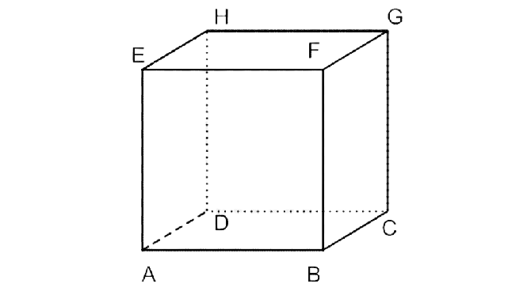
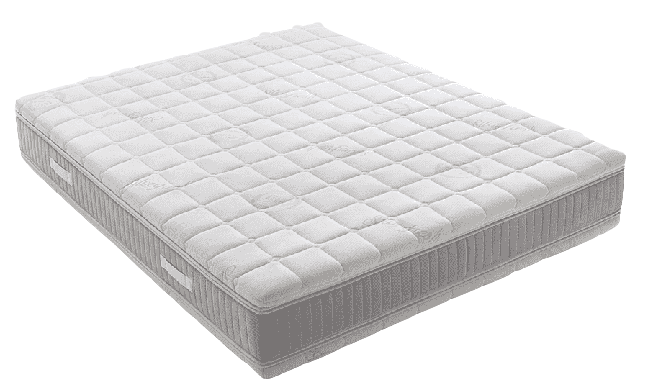
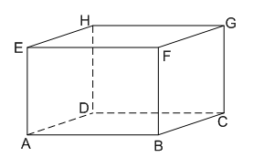
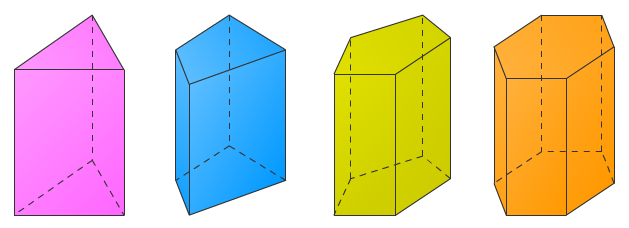
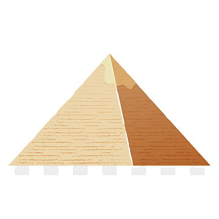

Bangun ruang sisi datar adalah bangun ruang yang memiliki sisi berbentuk datar (bukan sisi lengkung). Bangun ruang sisi datar yang akan dibahas dalam media ini meliputi kubus,balok, prisma, dan limas.
Kompetensi Inti dan Kompetensi Dasar
Kompetensi Inti
Menghargai dan menghayati ajarab agama yang dianutnya
Menghargai dan menghayati perilaku jujur, disiplin, tanggungjawab, peduli (toleransi, gotong royong), santun, percaya diri, dalam berinteraksi secara efektif dengan lingkungan sosial dan alam dalam jangkauan pergaulan dan keberadaannya
Memahami pengetahuan (faktual, konseptual, dan prosedural) berda-sarkan rasa ingin tahu-nya tentang ilmu pengetahuan, teknologi, seni, budaya terkait fenome-na dan kejadian tampak mata
Mencoba, mengolah, dan menyaji dalam ranah konkret (menggunakan, mengurai, merangkai, memodifikasi, dan membuat) dan ranah abstrak (menulis, membaca, menghitung, menggambar, dan mengarang) sesuai dengan yang dipelajari di sekolah dan sumber lain yang sama dalam sudut pandang/teori
Kompetensi Dasar
3.9 Membedakan dan menentukan luas permukaan dan volume bangun bangun ruang sisi datar (kubus, balok, prisma dan limas)
4.9 Menyelsaikan masalah yang berkaitan dengan luas permukaan dan volume bangun ruang sisi datar (kubus, balok, prisma dan limas)
Kubus
Gambar 1. Contoh Benda Berbentuk Kubus
Mengenal Kubus
Kubus adalah bangun ruang tiga dimensi yang dibatasi oleh enam bidang sisi yang kongruen berbentuk bujur sangkar. Kubus memiliki 6 sisi, 12 rusuk, dan 8 titik sudut. Kubus juga disebut dengan Bidang enam beraturan.
Gambar 2. Jaring-jaring Kubus

Gambar 3. Sketsa Kubus
Unsur-Unsur Kubus
Penjelasan :
1. Bidang (Sisi) merupakan daerah yang membatasi bagian luar dengan bagian dalam dari sbeuah bangun ruang.
2. Rusuk merupakan suatu perpotongan dua buah bidang yang berwujud garis.
3. Titik sudut adalah perpotongan tiga buah rusuk.
4. Diagonal bidang merupakan diagonal yang terletak dalam bidang bidang pembentuk bangun ruang atau pada sisi bangun ruang.
5. Diagonal ruang merupakan garis yang melintasi ruang yang menghubungkan dua titik sudut yang tidak sebidang.
6. Bidang diagonal merupakan suatu bidang yang melintasi ruang dalam bangun ruang.
Balok

Gambar 4. Contoh Benda Berbentuk Balok
Mengenal Balok
Balok adalah bangun ruang tiga dimensi yang dibentuk oleh tiga pasang persegi atau persegi panjang, dengan paling tidak satu pasang di antaranya berukuran berbeda. Balok memiliki 6 sisi, 12 rusuk dan 8 titik sudut.
Gambar 5. Jaring-jaring Balok

Gambar 6. Sketsa Balok
Unsur-Unsur Balok
Sifat-Sifat Balok
Prisma
Gambar 7. Contoh Benda Berbentuk Prisma
Prisma adalah bangun ruang tiga dimensi yang dibatasi oleh alas dan tutup identik berbentuk segi-n dan sisi-sisi tegak berbentuk persegi atau persegi panjang. Dengan kata lain prisma adalah bangun ruang yang mempunyai penampang melintang yang selalu sama dalam bentuk dan ukuran.

Gambar 8. Sketsa Prisma
Limas

Gambar 9. Contoh Benda Berbentuk Limas
Limas adalah bangun ruang tiga dimensi yang dibatasi oleh alas berbentuk segi-n dan sisi-sisi tegak berbentuk segitiga. Limas memiliki n + 1 sisi, 2n rusuk dan n + 1 titik sudut. Kerucut dapat disebut sebagai limas dengan alas berbentuk lingkaran. Limas dengan alas berupa persegi disebut juga piramida